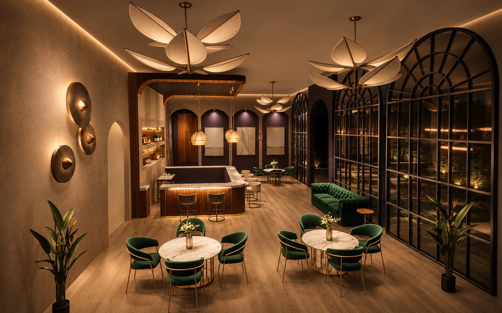

Iluminación comercialRestaurante Luna
En la barra, la luz cálida revela la veta del nogal. En las mesas se vuelve más suave y, al fondo, pequeños acentos separan los cuadros del muro color ciruela. Tres formas de iluminar acompañan tres momentos de la visita.
Ver presentación